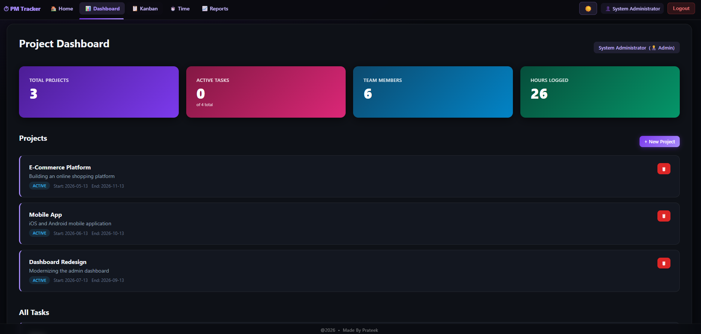

Project Management Time Tracker
A full-stack project management and time-tracking web app with a Kanban board, live time logging, dashboards and analytics reports. Backend built with Spring Boot, frontend with React and TypeScript, with role-based access for admins, managers and members.
Features:- Kanban task board
- Live time logging
- Role-based dashboards (Admin / Manager / Member)
- Analytics & productivity reports
Java • Spring Boot • React • TypeScript • MySQL